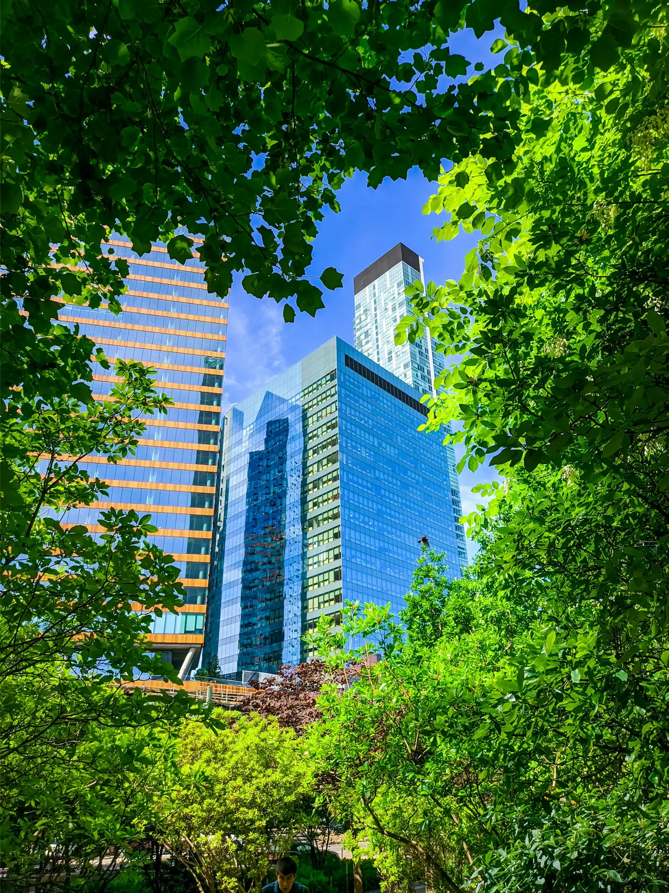
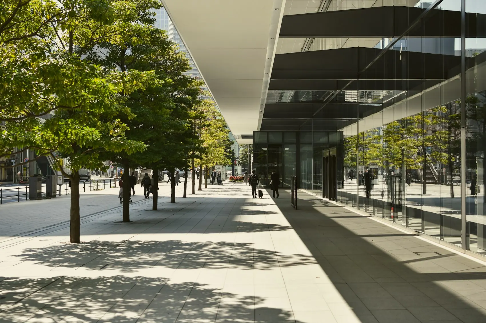

Stein speichert Energie.
Dunkle und massive Oberflächen können sich stark aufheizen und Wärme zeitversetzt wieder abgeben.
Wenn die Sonne untergeht, ist die Hitze oft noch da. Asphalt, Gebäude und der Mangel an Grün verändern, wie sich ein Stadtviertel erwärmt und wieder abkühlt. Ein Streifzug durch das Phänomen der städtischen Wärmeinsel.

Eine Wärmeinsel ist kein einzelner heißer Ort. Sie beschreibt den Temperaturunterschied zwischen einer Stadt und ihrer weniger bebauten Umgebung – besonders deutlich oft in ruhigen, klaren Nächten.
Gebäude und Straßen nehmen tagsüber Energie auf. Viele versiegelte Flächen lassen Regenwasser schnell abfließen; damit fehlt auch ein Teil der Verdunstungskühlung. Die Bebauung kann außerdem beeinflussen, wie Luft strömt und Wärme abgegeben wird.
Wichtig ist die Unterscheidung: Die Temperatur einer Oberfläche ist nicht dasselbe wie die Lufttemperatur und sagt allein noch nicht, wie heiß sich ein Ort für Menschen anfühlt. Mehr zur wissenschaftlichen Einordnung.
Dunkle und massive Oberflächen können sich stark aufheizen und Wärme zeitversetzt wieder abgeben.
Vegetation spendet Schatten. Wo ausreichend Wasser vorhanden ist, unterstützt Verdunstung die Kühlung.
Bei wenig Wind und klarem Himmel kann der Unterschied zwischen Stadt und Umland besonders auffallen.

Schon die Wahl zwischen Sonne und Schatten kann den Aufenthalt in einer Straße grundlegend verändern. Die Kühlung eines ganzen Quartiers ist komplexer: Baumarten, Wasser, Boden und Luftbewegung greifen ineinander.
Was eine kühlere Stadt braucht
Fotografie: Baumkronen, Gebäude und Schatten im Stadtraum. Keine Temperaturmessung.
Wer urbane Hitze verstehen möchte, sollte ihre Mechanismen auseinanderhalten, statt auf einen einzigen Wert oder eine schnelle Lösung zu vertrauen.
Nein. Parks, Straßen, Hinterhöfe und Wasserflächen unterscheiden sich. Auch die umliegende Landschaft und die Wetterlage beeinflussen die Stärke und Ausprägung der Wärmeinsel.
Seine Krone reduziert direkte Sonneneinstrahlung auf Menschen und Oberflächen. Zusätzlich kann Verdunstung die Umgebung abkühlen, solange der Baum ausreichend Wasser erhält.
Reflektierende Dachoberflächen können die Wärmeaufnahme senken. Für den Fußgängerraum und ganze Quartiere sind ihre Auswirkungen nicht identisch; Verschattung, Begrünung und Regenwasserplanung ergänzen sich.